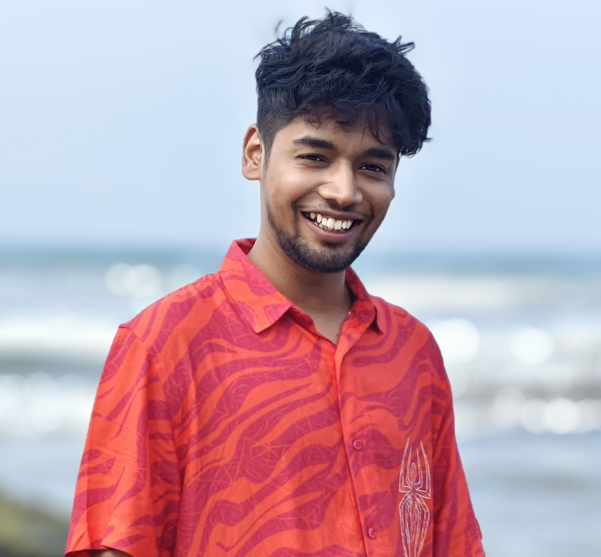

Making games since 2020

Game Producer · CAPM
Gaurav Kumar
Product ownership · Project management · Game design
Core skills
- 43people led
- 23+systems built for Planet of Twins
- 6disciplines in one team

Product ownership · Project management · Game design
Core skills
The memories that stay are made in the games we play.
Mine were made with family and friends around one screen, and I want the whole world to have that feeling. So I make games people play together, and I run teams the same way: I own the strategy, lead the people and ship the vision.
Achievements
My story
Skills
I believe every project that ships stands on three things: leadership that listens, problems fixed at the root, and communication that leaves no one guessing. Under all three is the craft of building games with my own hands.
Experience
Game tester on a live platform in 2021. Game producer for two years, leading 43 people through 24 releases. Now producing and building a game of my own.
Projects
Planet of Twins is my original IP, in development now. The other five are where I learned to build it.
My own co-op action-adventure for PC, with a single-player mode too. Two twins share one life, and the distance between them drains it. I produce it and I build it.
I ran a team of three, set the look and built the world: the camera, the environment and the shaders.
SoloA short first-person survival horror game, built end to end: AI, level design, audio and lighting-driven pacing.
ShippedMy first published game. A 2D hyper-casual platformer you can play in the browser.
SoloA 2D side-scrolling shooter in the spirit of the NES era, with hand-made art.
PrototypeBuilt to go deep on real-time networking with Photon: rooms, matchmaking and core combat.
Studio releases and my own projects together.
Contact
This site uses analytics cookies to see which pages get read. No ads, and nothing is sold or shared.